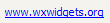
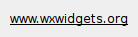

| Version: 2.9.4 |
#include </home/zeitlin/src/wx/github/interface/wx/hyperlink.h>
 Inheritance diagram for wxHyperlinkCtrl:
Inheritance diagram for wxHyperlinkCtrl:This class shows a static text element which links to an URL.
Appearance and behaviour is completely customizable.
In fact, when the user clicks on the hyperlink, a wxHyperlinkEvent is sent but if that event is not handled (or it's skipped; see wxEvent::Skip), then a call to wxLaunchDefaultBrowser() is done with the hyperlink's URL.
Note that standard wxWindow functions like wxWindow::SetBackgroundColour, wxWindow::SetFont, wxWindow::SetCursor, wxWindow::SetLabel can be used to customize appearance of the hyperlink.
This class supports the following styles:
The following event handler macros redirect the events to member function handlers 'func' with prototypes like:
Event macros for events emitted by this class:
Currently this class is implemented using native support in wxGTK and wxMSW (under Windows XP and later only) and a generic version is used by the other ports.
|  |  |  |
| wxMSW appearance | wxGTK appearance | wxMac appearance |
Public Member Functions | |
| wxHyperlinkCtrl () | |
| wxHyperlinkCtrl (wxWindow *parent, wxWindowID id, const wxString &label, const wxString &url, const wxPoint &pos=wxDefaultPosition, const wxSize &size=wxDefaultSize, long style=wxHL_DEFAULT_STYLE, const wxString &name=wxHyperlinkCtrlNameStr) | |
| Constructor. | |
| bool | Create (wxWindow *parent, wxWindowID id, const wxString &label, const wxString &url, const wxPoint &pos=wxDefaultPosition, const wxSize &size=wxDefaultSize, long style=wxHL_DEFAULT_STYLE, const wxString &name=wxHyperlinkCtrlNameStr) |
| Creates the hyperlink control. | |
| virtual wxColour | GetHoverColour () const |
| Returns the colour used to print the label of the hyperlink when the mouse is over the control. | |
| virtual wxColour | GetNormalColour () const |
| Returns the colour used to print the label when the link has never been clicked before (i.e. | |
| virtual wxString | GetURL () const |
| Returns the URL associated with the hyperlink. | |
| virtual bool | GetVisited () const =0 |
| Returns true if the hyperlink has already been clicked by the user at least one time. | |
| virtual wxColour | GetVisitedColour () const |
| Returns the colour used to print the label when the mouse is not over the control and the link has already been clicked before (i.e. | |
| virtual void | SetHoverColour (const wxColour &colour) |
| Sets the colour used to print the label of the hyperlink when the mouse is over the control. | |
| virtual void | SetNormalColour (const wxColour &colour) |
| Sets the colour used to print the label when the link has never been clicked before (i.e. | |
| virtual void | SetURL (const wxString &url) |
| Sets the URL associated with the hyperlink. | |
| virtual void | SetVisited (bool visited=true)=0 |
| Marks the hyperlink as visited (see wxHyperlinkCtrl::SetVisitedColour). | |
| virtual void | SetVisitedColour (const wxColour &colour) |
| Sets the colour used to print the label when the mouse is not over the control and the link has already been clicked before (i.e. | |
| wxHyperlinkCtrl::wxHyperlinkCtrl | ( | ) |
| wxHyperlinkCtrl::wxHyperlinkCtrl | ( | wxWindow * | parent, |
| wxWindowID | id, | ||
| const wxString & | label, | ||
| const wxString & | url, | ||
| const wxPoint & | pos = wxDefaultPosition, |
||
| const wxSize & | size = wxDefaultSize, |
||
| long | style = wxHL_DEFAULT_STYLE, |
||
| const wxString & | name = wxHyperlinkCtrlNameStr |
||
| ) |
Constructor.
See Create() for more info.
| bool wxHyperlinkCtrl::Create | ( | wxWindow * | parent, |
| wxWindowID | id, | ||
| const wxString & | label, | ||
| const wxString & | url, | ||
| const wxPoint & | pos = wxDefaultPosition, |
||
| const wxSize & | size = wxDefaultSize, |
||
| long | style = wxHL_DEFAULT_STYLE, |
||
| const wxString & | name = wxHyperlinkCtrlNameStr |
||
| ) |
Creates the hyperlink control.
| parent | Parent window. Must not be NULL. |
| id | Window identifier. A value of wxID_ANY indicates a default value. |
| label | The label of the hyperlink. |
| url | The URL associated with the given label. |
| pos | Window position. |
| size | Window size. If the wxDefaultSize is specified then the window is sized appropriately. |
| style | Window style. See wxHyperlinkCtrl. |
| name | Window name. |
| virtual wxColour wxHyperlinkCtrl::GetHoverColour | ( | ) | const [virtual] |
Returns the colour used to print the label of the hyperlink when the mouse is over the control.
| virtual wxColour wxHyperlinkCtrl::GetNormalColour | ( | ) | const [virtual] |
Returns the colour used to print the label when the link has never been clicked before (i.e.
the link has not been visited) and the mouse is not over the control.
| virtual wxString wxHyperlinkCtrl::GetURL | ( | ) | const [virtual] |
Returns the URL associated with the hyperlink.
| virtual bool wxHyperlinkCtrl::GetVisited | ( | ) | const [pure virtual] |
Returns true if the hyperlink has already been clicked by the user at least one time.
| virtual wxColour wxHyperlinkCtrl::GetVisitedColour | ( | ) | const [virtual] |
Returns the colour used to print the label when the mouse is not over the control and the link has already been clicked before (i.e.
the link has been visited).
| virtual void wxHyperlinkCtrl::SetHoverColour | ( | const wxColour & | colour | ) | [virtual] |
Sets the colour used to print the label of the hyperlink when the mouse is over the control.
| virtual void wxHyperlinkCtrl::SetNormalColour | ( | const wxColour & | colour | ) | [virtual] |
Sets the colour used to print the label when the link has never been clicked before (i.e.
the link has not been visited) and the mouse is not over the control.
| virtual void wxHyperlinkCtrl::SetURL | ( | const wxString & | url | ) | [virtual] |
Sets the URL associated with the hyperlink.
| virtual void wxHyperlinkCtrl::SetVisited | ( | bool | visited = true | ) | [pure virtual] |
Marks the hyperlink as visited (see wxHyperlinkCtrl::SetVisitedColour).
| virtual void wxHyperlinkCtrl::SetVisitedColour | ( | const wxColour & | colour | ) | [virtual] |
Sets the colour used to print the label when the mouse is not over the control and the link has already been clicked before (i.e.
the link has been visited).